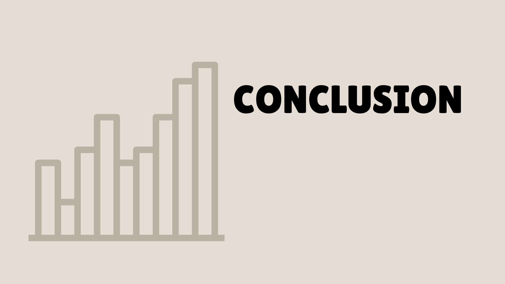

Conclusion
The responses we got were mostly predictable given that, in life, we spend time
mostly with people around us during a certain time in our lives. It also depends on where
the person is currently in life and their situation.
During the age range of 15–23, time is mostly spent with family, but as time passes,
it’s mostly spent alone. Given that, at that age, most students have their own priorities,
Many are still exploring what they want in life. At the age of 24-59, adulthood is a major
factor in why time is also mostly spent alone. After retirement, or during the age of 60
and above, time is mostly spent alone or with a partner, as during this time, spending
time alone or with a partner allows many to rest and relax after working for so long.
In the data we collected, it states that time is mostly spent alone in life. Regardless of
why we spend it that way, this explains how self-reliant one can be. Spending time alone
teaches us to become mindful and aware of what we have, thus allowing us to
appreciate more things in life. Considering how stressful life may be, spending time
allows us to recharge and release stress. Though we tend to spend most of our time
alone, that doesn’t mean that it is also self-isolation or loneliness. Giving ourselves most
of the time we have is one of the best things in life that will help us grow. As well as
balancing our time with family, friends, and partners, as each one has a great influence
on who and where we are in the present time.

References
Who do we spend time with across our lifetime? (2020, December 11). Our World in
Data. https://ourworldindata.org/time-with-others-lifetime
.png)